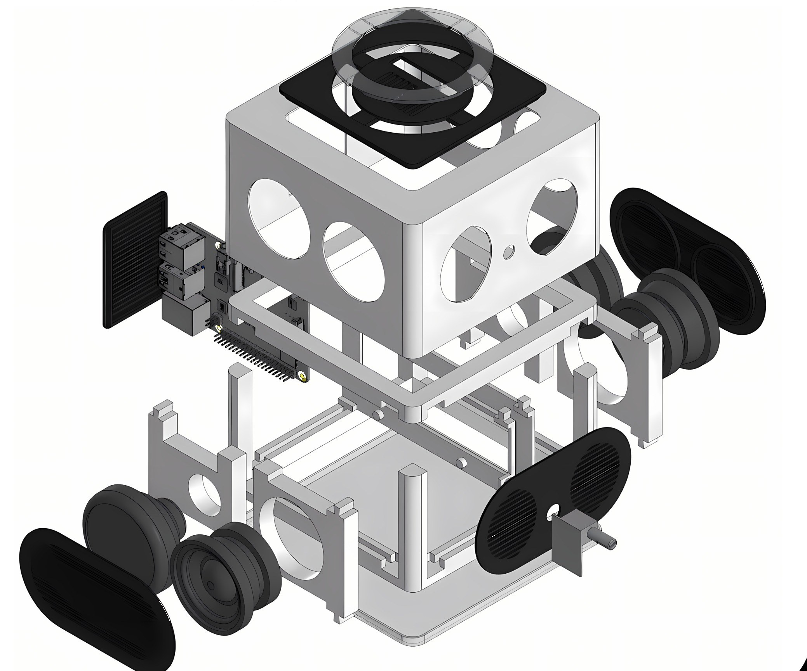
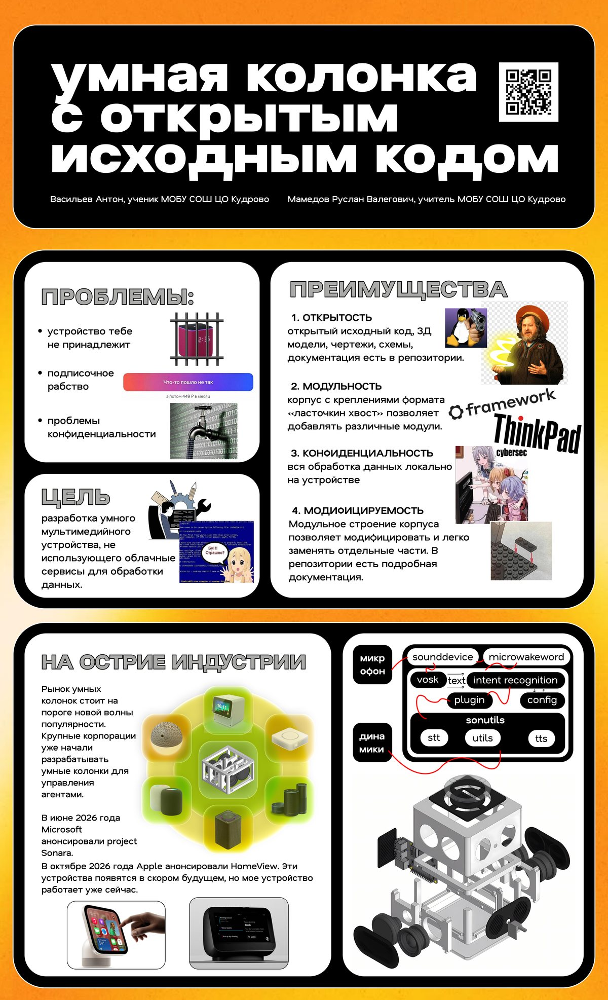

01 / Подписка
Подписка вместо владения
Полноценное использование продаётся по подписке. Без неё колонка превращается в ограниченное устройство, привязанное к чужой экосистеме.
Шаг в будущее · Мурманск, 23–28 ноября 2026
Прототип мультимедийного устройства на Rock Pi 4B+. Ключевая фраза, распознавание речи и синтез ответа работают на самой колонке — без облачных сервисов для обработки данных. Код открыт под GNU GPLv3.

01Проблема
Массовые умные колонки обрабатывают запросы в облаке. Пользователь не знает, что происходит с записью после ответа, а без подписки устройство теряет большую часть функций.
01 / Подписка
Полноценное использование продаётся по подписке. Без неё колонка превращается в ограниченное устройство, привязанное к чужой экосистеме.
02 / Облако
Запись уходит на серверы компании: там распознаётся речь и формируется ответ. Хранение истории запросов создаёт риск утечки персональных данных.
03 / Код
Пользователь не может посмотреть код, изменить логику или добавить нужную функцию. Всё решает производитель — от интерфейса до списка доступных команд.
Из реферата, раздел 1.1«Умные колонки с локальной обработкой создавали только энтузиасты — в производство такие устройства не поступали».
02Принципы
Четыре свойства, на которых держится конструкция и код. Они заложены в проект, а не добавлены после сборки.
01
Исходный код под GNU GPLv3, 3D-модели, чертежи и документация — в репозитории. Устройство можно изучать, собирать заново и улучшать.
02
Каркас с креплениями «ласточкин хвост»: дисплей, проектор, камера и датчики добавляются как отдельные модули. Ориентир — ремонтопригодные ThinkPad.
03
Ключевая фраза, речь и синтез ответа обрабатываются локально. Голос не нужно отправлять в облако, чтобы получить ответ.
04
Корпус печатается на 3D-принтере, внешние панели меняются. Со временем можно заменить корпус или отдельные части, не меняя устройство целиком.
03Устройство
Прототип построен на одноплатном компьютере Rock Pi 4B+. Корпус и каркас напечатаны из PLA, электроника подобрана под локальные нейросети.
04Архитектура
Вся цепочка выполняется на устройстве. Выбери шаг, чтобы увидеть, что происходит внутри.
Шаг 01 / 05 · офлайн
Локальная нейросеть openWakeWord постоянно проверяет звук на ключевую фразу. Пока фраза не распознана, команда не записывается и никуда не отправляется.
ТехнологияopenWakeWord · нейросеть на устройстве
Шаг 02 / 05 · офлайн
После активации микрофон записывает команду, а Vosk преобразует речь в текст на самом устройстве. Облачный STT не используется.
ТехнологияVosk · локальная модель STT
Шаг 03 / 05 · Python
Собственная функция сравнивает текст с шаблонами команд по расстоянию Левенштейна, определяет плагин и его параметры. Алгоритм устойчив к ошибкам распознавания речи.
Технологиярасстояние Левенштейна · Python
Шаг 04 / 05 · плагины
Погода, музыка, будильник, заметки или локальная языковая модель — каждый сценарий оформлен отдельным плагином. Общие утилиты sonutils упрощают разработку новых.
Технологиясистема плагинов · sonutils
Шаг 05 / 05 · офлайн
Piper синтезирует голос локально и отдаёт звук на усилитель и четыре динамика. Ответ локальной языковой модели озвучивается по мере генерации, в реальном времени.
ТехнологияPiper · локальный TTS
05Сравнение
Крупные колонки обрабатывают запросы в облаке и держат систему закрытой. Открытые альтернативы обычно требуют отдельный сервер.
| Устройство | Обработка | Открытый код | Внешний сервер |
|---|---|---|---|
| Amazon Echo | Облако | Нет | Нет |
| Google Nest | Облако | Нет | Нет |
| Apple HomePod | Облако, Siri | Нет | Нет |
| Яндекс Станция | Облако | Нет | Нет |
| ВК Капсула | Облако | Нет | Нет |
| Home Assistant Voice | Локально на сервере HA | Да | Да, Home Assistant |
| Наш прототип | Локально | Да, GPLv3 | Нет |
Данные из обзора аналогов в реферате. «Внешний сервер» — необходимость отдельного компьютера или сервиса для работы устройства. Оценка 15/20 — итог сравнения по четырём критериям, а не среднее по таблице.
06Плагины
Плагины — отдельные модули на Python. Ниже список из приложения А реферата со статусами на момент защиты проекта.
Показано 20 из 20
Vosk превращает голос в текст локальной упрощённой нейросетью.
Piper синтезирует голос на устройстве, без облачного TTS.
pytube ищет ролики на YouTube, mpv воспроизводит поток.
Ollama запускает модель на устройстве, ответ озвучивается по ходу генерации.
requests и bs4 собирают свежие материалы, устройство зачитывает текст статьи.
Установка и срабатывание будильника через стандартный модуль time.
Задачи сохраняются в JSON-файл. Функция в активной разработке.
Данные OpenWeatherMap через requests и bs4, озвучивание прогноза.
Хранение заметок в JSON-файле. Функция в активной разработке.
Поиск и чтение статей через библиотеку wikipedia.
Ответ на вопрос «сколько времени» через модуль time.
Составление маршрута. Функция в активной разработке.
Расписание общественного транспорта. Функция в активной разработке.
Сценарии тренировок. Функция в активной разработке.
Напоминания о событиях и делах.
Вычисления по голосовой команде.
Экономические конвертации валют и величин.
Отрисовка через Xorg, интерфейс на основе Kodi.
Управление устройствами умного дома. Функция в активной разработке.
Температура, влажность и уровень CO2. Функция в активной разработке.
07Материалы
Печатный постер с 3D-рендером, схемой обработки и четырьмя преимуществами. В реферате — обзор аналогов, архитектура, экономика, приложения с плагинами и технологическая карта.
Реферат — 8,3 МБ. Приложения: плагины, материалы, технологическая карта, экономика.
